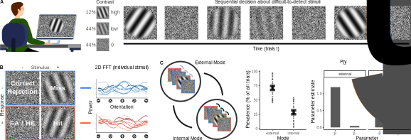
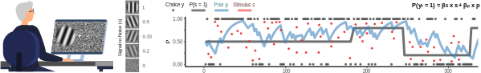

Veith Weilnhammer, MD/PhD
Helen Wills Neuroscience Institute, UC Berkeley


Weilnhammer, Chikermane, Sterzer. Bistable perception alternates between internal and external modes of sensory processing. iScience 2021.
Weilnhammer, Stuke, Standvoß, Sterzer. Sensory processing in humans and mice fluctuates between external and internal modes. PLOS Biology 2023.
Weilnhammer, Rothkirch, Yilmaz, Fritsch, Ptasczynski, Reichenbach, Roediger, Corlett, Sterzer. N-Methyl-D-aspartate receptor hypofunction causes recurrent and transient failures of perceptual inference. BioRxiv 2024.
Weilnhammer, Murai, Whitney. Dynamic predictive templates in perception. Current Biology 2024.